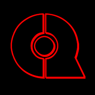

VL_PLAY Games - Мои разработки
Все разработки
Мои игры

Silent Darkness
Silent Darkness - это захватывающая хоррор-головоломка от первого лица. Вас ждут мрачные и атмосферные локации, где каждый шаг ставит вас перед новой головоломкой. Для того чтобы продвигаться дальше и раскрывать тайны этого мрачного мира, вам придется разгадать сложные загадки и искать ключи к разгадке. Вас ждут ужасные сюрпризы, и ваше выживание будет зависеть от ваших навыков решения головоломок и хладнокровия в страшных ситуациях. Готовьтесь к погружению в мир ужаса и загадок, где каждый шаг может стоить вам жизни.

Qlake
Qlake - это небольшой атмосферный шутер от первого лица в жанре выживания с элементами хоррора, разработанный на движке Unreal Engine 5. В этой игре игроку предстоит сразиться с зомби и их лидером, который является основной целью игры. Игрок будет проходить через несколько уровней, каждый из которых представляет собой набор вызовов и опасностей. Он будет искать аптечки и боеприпасы к оружию, которое поможет ему справиться с зомби и выжить на каждом уровне.
Tanabata: Path to the Stars
A relaxing atmospheric puzzle game with adventure elements. Embark on a mystical journey through Tokyo and beyond to discover the secret Tanabata festival! Explore beautiful locations, solve ancient puzzles, and play magical mini-games where your choices determine the spectacular starry finale.
Моё ПО
Xeno Language Ecosystem
Компактный интерпретируемый язык и VM для ESP32. Экосистема включает ядро языка, Windows-исполняемый файл и интегрированную среду разработки Xeno IDE.
Music Local UI
Легковесный музыкальный проигрыватель для Windows для локальных аудиофайлов (размером менее 1 МБ). Компактное и эффективное приложение для прослушивания музыки с вашего компьютера.
Port Scanner
Многофункциональный инструмент для анализа и взаимодействия с сетями. Предоставляет возможности для проверки IP-адресов, сканирования портов, пинга серверов, просмотра логов и доступа к терминальным командам.

Download Server
Современный веб-менеджер загрузок с отслеживанием прогресса в реальном времени и удобным интерфейсом. Этот инструмент предоставляет полный контроль над процессом загрузки файлов с расширенными функциями управления.
XenoOS
Командная оболочка (CLI) для взаимодействия с различными системными компонентами, такими как файловые системы, Wi-Fi, SD-карты и другие системные настройки. Система поддерживает множество команд для управления файлами, директориями и системными конфигурациями.
QWebUI
Веб-лаборатория квантовых вычислений с интерактивными блокнотами. Разработана на Flask + React с использованием Qiskit. Публичный архив под лицензией MIT.

VL_PLAY Games Bot
Многофункциональный Telegram-бот, который предоставлял ряд полезных команд для удобства пользователей. В настоящее время устарел и не поддерживается.

XenoClock
XenoClock - это компактное переносное устройство, предназначенное для удобства и функциональности. Стильный и точный, это устройство идеально подходит для тех, кто ценит время и необычный стиль жизни. Хоть вы скорее всего не сможете надеть его на руку, XenoClock всегда рядом, готовый помочь вам оставаться впереди событий.